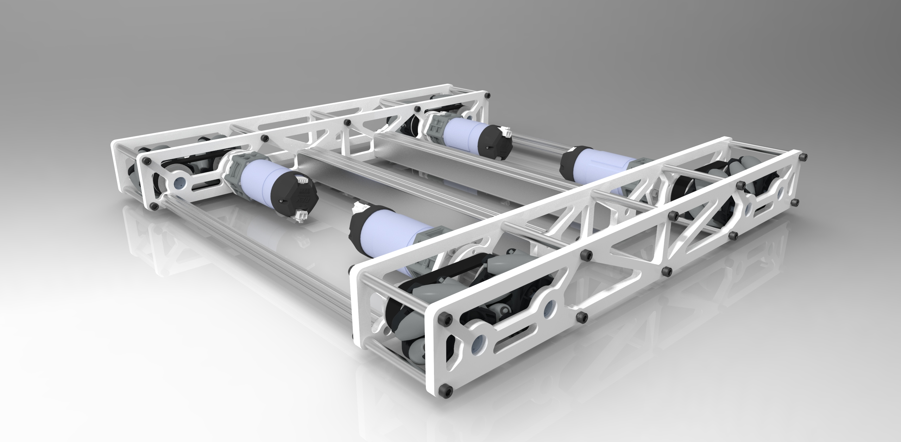

We designed a lot of custom parts using PTC Creo and were able to use our Openbuilds WORKBEE CNC Machine to machine our parts, including our box tube drivetrain and boxtube scoring arm. With it we were able to accurately cut a sleek low profile design utilizing the hollow nature of 1/16 inch box tube to mount our motors. We also 3d printed many parts in order to create both strong and lightweight components for our gripper.
Drivetrain and scoring mechanism This season we used a 6 wheel tank drivetrain since we found that the acceleration and reliability of a tank drive was more important in this game than the third degree of freedom that mecanum wheels grant. The pulleys were also printed larger so that the belts can act as treads while driving over the barrier. We have a pass-through scoring design, in which our surgical tubing intake grabs the freight and feeds it straight into our double axis ….. This design allows us to use our arm to score in every position on the alliance hubs, as well as cycle the shared hub, and cap team scoring elements. We also implemented magnets in order to score a more wide range of team shipping elements.
Our goal this season in terms of programming is to have easy to understand, readable code. In order to more closely integrate programming with the mechanics of the robot, we are working towards automating teleOp functions and using gyro-based movements to increase accuracy. Also, to increase the adaptability of our robot, we've implemented manual driver controls in teleOp. Azreen: Programming In TeleOp, we aim to ease driver ergonomics by automating certain movements including closing our gripper when intaking blocks and spheres, and automating arm movements based on Xstates and timers. To aid driver comfort, we've implemented auto braking to prevent sliding on the field, as well as splitting TeleOp into red and blue classes to optimize the duck carousel subsystem. Sonia: More Programming LOL Nerds shut up pay attention In terms of auto this year, we are using encoderDrive to make our robot's movements smooth and precise. Along with this, we've implemented Gyro based turning functions within our autonomous to essentially have our robot self-correct minor errors and continue on its target path. To further aid smooth movement with our tank drivetrain, we implemented a trapezoid curve for our speed, so the robot's movements are not jerky. This has minimal effect on the overall time needed to run our auto, so it's preferable.
This season we exemplify gracious professionalism by making robotics more accessible in our community. It's the secret ingredient in our recipe for inspiring other teams. By connecting with people not only in the robotics community but also beyond, we strive to embody FIRST in everything we do.